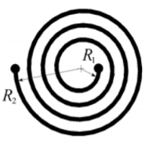
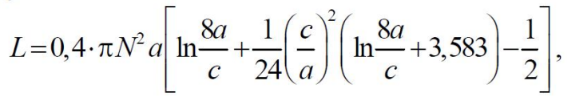
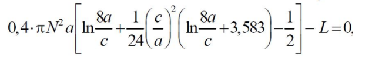

У інтегральних схемах використовуються плоскі котушки індуктивності у вигляді круглої металевої спіралі.
Індуктивність такої котушки (в наногенрі) наближено визначається за формулою:
Знайдіть радіус R2, що задовольняє необхідному значенню індуктивності L при зазначених у таблиці N і R1.
Курсова робота студента групи 3-В
cdu.edu.ua
Єрьоменка Андрія Дмитровича
eromenko.andrey@gmail.com
| № котушки | 1 | 2 | 3 | 4 | 5 | 6 |
| R1 (мм) | 1.5 | 2 | 1.3 | 2 | 1.5 | 2 |
| N | 6 | 3.5 | 5 | 2 | 3 | 2.5 |
| L (нГн) | 250 | 120 | 230 | 35 | 77 | 68 |
Номер котушки
Параметри котушки
| R1 (мм) | N | L (нГн) |
| 1.5 | 6 | 250 |
Рівняння f(x)
| a | (R1 + R2) / 2 |
| c | R2 - R1 |
Побудова графіка функції
Знаходження відрізка
Знаходження корення (R2)
Знаходження корення